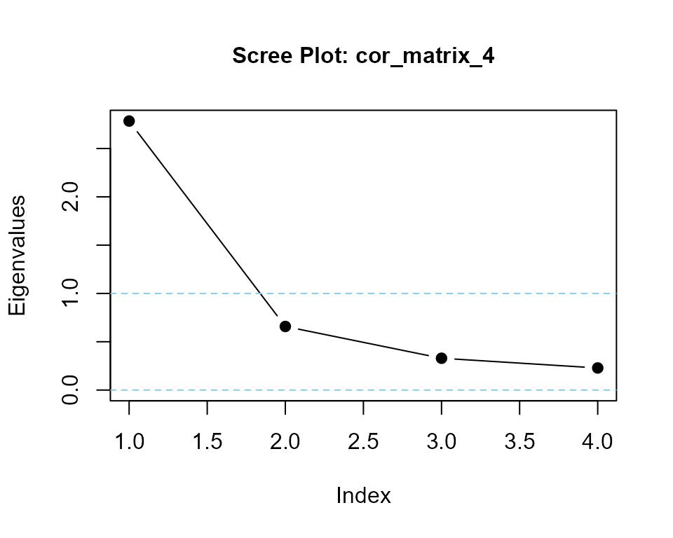
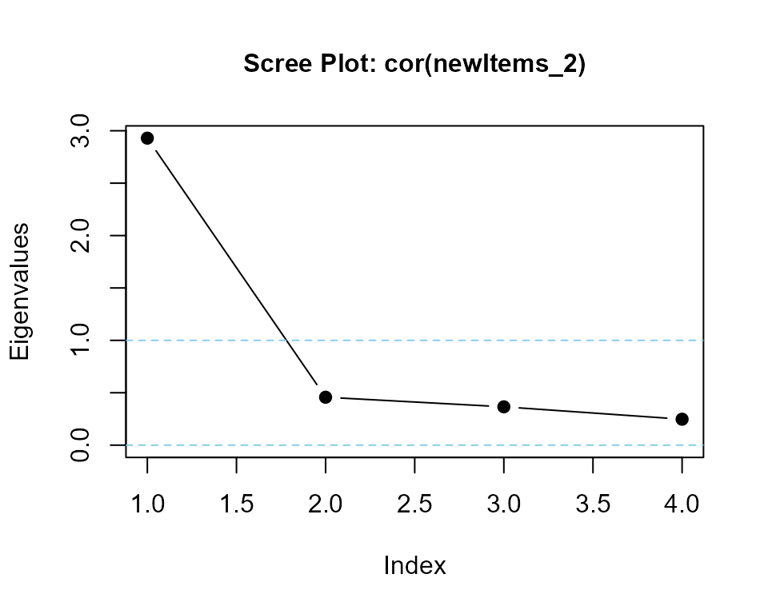

LikertMakeR vignette
Hume Winzar
April 2025
Source:vignettes/LikertMakeR_vignette.Rmd
LikertMakeR_vignette.RmdLikertMakeR (Winzar, 2022)
lets you create synthetic Likert-scale, or related rating-scale,
data.
Set the mean, standard deviation, and correlations or model
coefficients, and the package generates data matching those properties.
It can also rearrange existing data columns to achieve a desired
correlation structure or generate data based on Cronbach’s
Alpha, factor correlations, regression or
ANOVA coefficients, or other summary statistics.
Purpose
The package should be useful for teaching in the Social Sciences, and for scholars who wish to “replicate” or “reverse engineer” rating-scale data for further analysis and visualisation when only summary statistics have been reported.
Motivation
I was prompted to write the core functions in LikertMakeR after reviewing too many journal article submissions where authors presented questionnaire results with only means and standard deviations (often only the means), with no apparent understanding of scale distributions, and their impact on scale properties.
Hopefully, this tool will help researchers, teachers & students, and other reviewers, to better think about rating-scale distributions, and the effects of variance, scale boundaries, and number of items in a scale. Researchers can also use LikertMakeR to create dummy data to prepare analyses ahead of a formal survey.
Rating scale properties
A Likert scale is the mean, or sum, of several ordinal rating scales. Typically, they are bipolar (usually “agree-disagree”) responses to propositions that are determined to be moderately-to-highly correlated and that capture some facet of a theoretical construct.
Rating scales, such as Likert scales, are not continuous or unbounded.
For example, a 5-point Likert scale that is constructed with, say, five items (questions) will have a summed range of between 5 (all rated ‘1’) and 25 (all rated ‘5’) with all integers in between, and the mean range will be ‘1’ to ‘5’ with intervals of 1/5=0.20. A 7-point Likert scale constructed from eight items will have a summed range between 8 (all rated ‘1’) and 56 (all rated ‘7’) with all integers in between, and the mean range will be ‘1’ to ‘7’ with intervals of 1/8=0.125.
Technically, because they are bounded and not continuous, parametric statistics, such as mean, standard deviation, and correlation, should not be applied to summated rating scales. In practice, however, parametric statistics are commonly used in the social sciences because:
they are in common usage and easily understood,
results and conclusions drawn from technically-correct non-parametric statistics are (almost) always the same as for parametric statistics for such data.
For example, D’Alessandro et al. (2020) argue that a summated scale, made with multiple items, “approaches” an interval scale measure, implying that parametric statistics are quite acceptable.
Rating-scale boundaries define minima and maxima for any scale
values. If the mean is close to one boundary then data points will
gather more closely to that boundary.
If the mean is not in the
middle of a scale, then the data will be always skewed, as shown in the
following plots.

Off-centre means always give skewed distribution in bounded rating scales
LikertMakeR functions
lfast() generate a vector of values with predefined mean and standard deviation.
lcor() takes a dataframe of rating-scale values and rearranges the values in each column so that the columns are correlated to match a predefined correlation matrix.
makeCorrAlpha constructs a random correlation matrix of given dimensions from a predefined Cronbach’s Alpha.
makeCorrLoadings constructs a random correlation matrix from a given factor loadings matrix, and factor-correlations matrix.
makeScales() is a wrapper function for lfast() and lcor() to generate items or summated scales with predefined first and second moments and a predefined correlation matrix. This function replaces makeItems() and now includes multi-item measures.
makeItemsScale() generates a random dataframe of scale items based on a predefined summated scale with a desired Cronbach’s Alpha.
makePaired() generates a dataframe of two correlated columns based on summary data from a paired-sample t-test.
makeRepeated() generates a dataframe of ‘k’ correlated columns based on summary data from a repeated-samples ANOVA.
makeScalesRegression() generates a dataframe based on results of output from multiple-regression - R2, standardised betas, and IV correlations (if available).
correlateScales() creates a dataframe of correlated summated scales as one might find in completed survey questionnaire and possibly used in a Structural Equation model.
-
Helper Functions
alpha() calculates Cronbach’s Alpha from a given correlation matrix or a given dataframe.
eigenvalues() calculates eigenvalues of a correlation matrix, reports on positive-definite status of the matrix and, optionally, displays a scree plot to visualise the eigenvalues.
Using LikertMakeR
Generate synthetic rating-scale data
lfast()
- lfast() applies a simple evolutionary algorithm which draws repeated random samples from a scaled Beta distribution. It produces a vector of values with mean and standard deviation typically correct to two decimal places.
To synthesise a rating scale with lfast(), the user must input the following parameters:
n: sample size
mean: desired mean
sd: desired standard deviation
lowerbound: desired lower bound
upperbound: desired upper bound
items: number of items making the scale - default = 1
An earlier version of LikertMakeR had a function, lexact(), which was slow and no more accurate than the latest version of lfast(). So, lexact() is now deprecated.
lfast() example
a four-item, five-point Likert scale
nItems <- 4
mean <- 2.5
sd <- 0.75
x1 <- lfast(
n = 512,
mean = mean,
sd = sd,
lowerbound = 1,
upperbound = 5,
items = nItems
)
#> best solution in 256 iterationsExample: 4-item, 1-5 Likert scale
an 11-point likelihood-of-purchase scale
lfast()
x2 <- lfast(256, 3, 2.5, 0, 10)
#> best solution in 7723 iterationsExample: likelihood-of-purchase scale
Correlating rating scales
The function, lcor(), rearranges the values in the columns of a data-set so that they are correlated at a specified level. It does not change the values - it swaps their positions within each column so that univariate statistics do not change, but their correlations with other vectors do.
lcor()
lcor() systematically selects pairs of values in a column and swaps their places, and checks to see if this swap improves the correlation matrix. If the revised dataframe produces a correlation matrix closer to the target correlation matrix, then the swap is retained. Otherwise, the values are returned to their original places. This process is iterated across each column.
To create the desired correlated data, the user must define the following parameters:
data: a starter data set of rating-scales. Number of columns must match the dimensions of the target correlation matrix.
target: the target correlation matrix.
lcor() example
Let’s generate some data: three 5-point Likert scales, each with five items.
## generate uncorrelated synthetic data
n <- 128
lowerbound <- 1
upperbound <- 5
items <- 5
mydat3 <- data.frame(
x1 = lfast(n, 2.5, 0.75, lowerbound, upperbound, items),
x2 = lfast(n, 3.0, 1.50, lowerbound, upperbound, items),
x3 = lfast(n, 3.5, 1.00, lowerbound, upperbound, items)
)
#> best solution in 812 iterations
#> best solution in 7553 iterations
#> best solution in 385 iterationsThe first six observations from this dataframe are:
#> x1 x2 x3
#> 1 1.4 1.0 5.0
#> 2 2.8 5.0 4.2
#> 3 3.4 1.8 2.0
#> 4 2.0 4.8 4.4
#> 5 3.6 1.0 3.4
#> 6 2.2 2.8 4.0And the first and second moments (to 3 decimal places) are:
#> x1 x2 x3
#> mean 2.500 3.002 3.498
#> sd 0.752 1.501 1.001We can see that the data have first and second moments are very close to what is expected.
As we should expect, randomly-generated synthetic data have low correlations:
#> x1 x2 x3
#> x1 1.00 -0.02 0.03
#> x2 -0.02 1.00 0.00
#> x3 0.03 0.00 1.00Now, let’s define a target correlation matrix:
## describe a target correlation matrix
tgt3 <- matrix(
c(
1.00, 0.85, 0.75,
0.85, 1.00, 0.65,
0.75, 0.65, 1.00
),
nrow = 3
)So now we have a dataframe with desired first and second moments, and a target correlation matrix.
## apply lcor() function
new3 <- lcor(data = mydat3, target = tgt3)Values in each column of the new dataframe do not change from the original; the values are rearranged.
The first ten observations from this dataframe are:
#> X1 X2 X3
#> 1 3.8 4.8 3.8
#> 2 3.8 5.0 4.8
#> 3 2.2 2.2 2.0
#> 4 3.4 5.0 4.6
#> 5 1.8 1.0 2.4
#> 6 3.0 3.8 4.2
#> 7 3.2 3.2 3.8
#> 8 2.4 3.4 2.6
#> 9 2.4 2.2 4.6
#> 10 2.2 2.4 1.6And the new dataframe is correlated close to our desired correlation matrix; here presented to 3 decimal places:
#> X1 X2 X3
#> X1 1.00 0.85 0.75
#> X2 0.85 1.00 0.65
#> X3 0.75 0.65 1.00Generate a correlation matrix from Cronbach’s Alpha
makeCorrAlpha()
makeCorrAlpha(), constructs a random correlation matrix of given dimensions and predefined Cronbach’s Alpha.
To create the desired correlation matrix, the user must define the following parameters:
items: or “k” - the number of rows and columns of the desired correlation matrix.
alpha: the target value for Cronbach’s Alpha
variance: a notional variance coefficient to affect the spread of values in the correlation matrix. Default = ‘0.5’. A value of ‘0’ produces a matrix where all off-diagonal correlations are equal. Setting ‘variance = 1.0’ gives a wider range of values. Setting ‘variance = 2.0’, or above, may be feasible but increases the likelihood of a non-positive-definite matrix.
precision: a value between ‘0’ and ‘3’ to add some random variation around the target Cronbach’s Alpha. Default = ‘0’. A value of ‘0’ produces the desired Alpha, generally exact to two decimal places. Higher values produce increasingly random values around the desired Alpha.
sort_cors: Logical. Default =
FALSE. IfTRUE, then runs more quickly, but produces a less natural correlation matrix.diagnostics: Logical. If
TRUE, returns a list containing the correlation matrix and a diagnostics list (target/achieved alpha, average inter-item correlation, eigenvalues, PD flag, and key arguments). IfFALSE(default), returns the correlation matrix only.
makeCorrAlpha() is volatile
Random values generated by makeCorrAlpha() are highly volatile. makeCorrAlpha() may not generate a feasible (positive-definite) correlation matrix, especially when
-
variance is high relative to
- desired Alpha, and
- desired correlation dimensions
makeCorrAlpha() will inform the user if the resulting correlation matrix is positive definite, or not.
If the returned correlation matrix is not positive-definite, a feasible solution may be still possible, and often is. The user is encouraged to try again, possibly several times, to find one.
makeCorrAlpha() examples
Four variables, alpha = 0.85, variance = default
## define parameters
items <- 4
alpha <- 0.85
# variance <- 0.5 ## by default
## apply makeCorrAlpha() function
set.seed(42)
cor_matrix_4 <- makeCorrAlpha(items, alpha)
#> correlation values consistent with desired alpha in 59 iterationsmakeCorrAlpha() produced the following correlation matrix (to three decimal places):
#> item01 item02 item03 item04
#> item01 1.000 0.766 0.693 0.433
#> item02 0.766 1.000 0.694 0.425
#> item03 0.693 0.694 1.000 0.507
#> item04 0.433 0.425 0.507 1.000test output with Helper functions
## using helper function alpha()
alpha(cor_matrix_4)
#> [1] 0.8500063
## using helper function eigenvalues()
eigenvalues(cor_matrix_4, 1)
#> cor_matrix_4 is positive-definite
#> [1] 2.7831667 0.6670820 0.3157114 0.2340400twelve variables, alpha = 0.90, variance = 1
## define parameters
items <- 12
alpha <- 0.90
variance <- 1.0
## apply makeCorrAlpha() function
set.seed(42)
cor_matrix_12 <- makeCorrAlpha(items = items, alpha = alpha, variance = variance)
#> correlation values consistent with desired alpha in 4312 iterations
#> Correlation matrix is not yet positive definite
#> Working on it
#>
#> improved at swap - 1 (min eigenvalue: -0.953206)
#> improved at swap - 4 (min eigenvalue: -0.948513)
#> improved at swap - 7 (min eigenvalue: -0.885627)
#> improved at swap - 11 (min eigenvalue: -0.823701)
#> improved at swap - 13 (min eigenvalue: -0.817121)
#> improved at swap - 18 (min eigenvalue: -0.795548)
#> improved at swap - 19 (min eigenvalue: -0.786689)
#> improved at swap - 24 (min eigenvalue: -0.785326)
#> improved at swap - 25 (min eigenvalue: -0.783145)
#> improved at swap - 30 (min eigenvalue: -0.780524)
#> improved at swap - 33 (min eigenvalue: -0.770617)
#> improved at swap - 43 (min eigenvalue: -0.769144)
#> improved at swap - 47 (min eigenvalue: -0.76871)
#> improved at swap - 49 (min eigenvalue: -0.767956)
#> improved at swap - 74 (min eigenvalue: -0.75443)
#> improved at swap - 84 (min eigenvalue: -0.709321)
#> improved at swap - 89 (min eigenvalue: -0.709319)
#> improved at swap - 97 (min eigenvalue: -0.709101)
#> improved at swap - 105 (min eigenvalue: -0.702808)
#> improved at swap - 109 (min eigenvalue: -0.686501)
#> improved at swap - 123 (min eigenvalue: -0.675567)
#> improved at swap - 149 (min eigenvalue: -0.656166)
#> improved at swap - 154 (min eigenvalue: -0.647445)
#> improved at swap - 156 (min eigenvalue: -0.639865)
#> improved at swap - 162 (min eigenvalue: -0.636826)
#> improved at swap - 207 (min eigenvalue: -0.636473)
#> improved at swap - 227 (min eigenvalue: -0.631569)
#> improved at swap - 239 (min eigenvalue: -0.631529)
#> improved at swap - 260 (min eigenvalue: -0.630315)
#> improved at swap - 265 (min eigenvalue: -0.630018)
#> improved at swap - 277 (min eigenvalue: -0.628351)
#> improved at swap - 305 (min eigenvalue: -0.624799)
#> improved at swap - 306 (min eigenvalue: -0.620084)
#> improved at swap - 330 (min eigenvalue: -0.61767)
#> improved at swap - 370 (min eigenvalue: -0.616984)
#> improved at swap - 410 (min eigenvalue: -0.615695)
#> improved at swap - 413 (min eigenvalue: -0.610777)
#> improved at swap - 432 (min eigenvalue: -0.609952)
#> improved at swap - 454 (min eigenvalue: -0.609934)
#> improved at swap - 464 (min eigenvalue: -0.608802)
#> improved at swap - 475 (min eigenvalue: -0.606048)
#> improved at swap - 480 (min eigenvalue: -0.604196)
#> improved at swap - 481 (min eigenvalue: -0.603605)
#> improved at swap - 489 (min eigenvalue: -0.603575)
#> improved at swap - 509 (min eigenvalue: -0.557319)
#> improved at swap - 517 (min eigenvalue: -0.556993)
#> improved at swap - 525 (min eigenvalue: -0.555728)
#> improved at swap - 550 (min eigenvalue: -0.550725)
#> improved at swap - 584 (min eigenvalue: -0.546519)
#> improved at swap - 588 (min eigenvalue: -0.54343)
#> improved at swap - 589 (min eigenvalue: -0.525605)
#> improved at swap - 609 (min eigenvalue: -0.520762)
#> improved at swap - 677 (min eigenvalue: -0.520203)
#> improved at swap - 682 (min eigenvalue: -0.517845)
#> improved at swap - 735 (min eigenvalue: -0.517013)
#> improved at swap - 772 (min eigenvalue: -0.516949)
#> improved at swap - 823 (min eigenvalue: -0.516743)
#> improved at swap - 840 (min eigenvalue: -0.516391)
#> improved at swap - 848 (min eigenvalue: -0.512467)
#> improved at swap - 852 (min eigenvalue: -0.512226)
#> improved at swap - 896 (min eigenvalue: -0.512095)
#> improved at swap - 911 (min eigenvalue: -0.51205)
#> improved at swap - 916 (min eigenvalue: -0.51194)
#> improved at swap - 917 (min eigenvalue: -0.510744)
#> improved at swap - 969 (min eigenvalue: -0.509389)
#> improved at swap - 971 (min eigenvalue: -0.508507)
#> improved at swap - 974 (min eigenvalue: -0.508265)
#> improved at swap - 1000 (min eigenvalue: -0.501376)
#> improved at swap - 1006 (min eigenvalue: -0.500307)
#> improved at swap - 1024 (min eigenvalue: -0.49485)
#> improved at swap - 1084 (min eigenvalue: -0.494849)
#> improved at swap - 1114 (min eigenvalue: -0.49467)
#> improved at swap - 1127 (min eigenvalue: -0.492862)
#> improved at swap - 1138 (min eigenvalue: -0.491828)
#> improved at swap - 1146 (min eigenvalue: -0.488759)
#> improved at swap - 1220 (min eigenvalue: -0.487876)
#> improved at swap - 1230 (min eigenvalue: -0.487867)
#> improved at swap - 1235 (min eigenvalue: -0.48684)
#> improved at swap - 1299 (min eigenvalue: -0.486493)
#> improved at swap - 1413 (min eigenvalue: -0.482833)
#> improved at swap - 1434 (min eigenvalue: -0.48144)
#> improved at swap - 1534 (min eigenvalue: -0.481217)
#> improved at swap - 1538 (min eigenvalue: -0.481094)
#> improved at swap - 1637 (min eigenvalue: -0.479178)
#> improved at swap - 1647 (min eigenvalue: -0.478561)
#> improved at swap - 1704 (min eigenvalue: -0.476757)
#> improved at swap - 1780 (min eigenvalue: -0.474676)
#> improved at swap - 1806 (min eigenvalue: -0.474662)
#> improved at swap - 1953 (min eigenvalue: -0.474644)
#> improved at swap - 1956 (min eigenvalue: -0.474581)
#> improved at swap - 1984 (min eigenvalue: -0.47448)
#> improved at swap - 2006 (min eigenvalue: -0.474466)
#> improved at swap - 2016 (min eigenvalue: -0.470122)
#> improved at swap - 2034 (min eigenvalue: -0.468171)
#> improved at swap - 2326 (min eigenvalue: -0.468064)
#> improved at swap - 2338 (min eigenvalue: -0.467538)
#> improved at swap - 2350 (min eigenvalue: -0.467353)
#> improved at swap - 2435 (min eigenvalue: -0.466742)
#> improved at swap - 2487 (min eigenvalue: -0.466487)
#> improved at swap - 2516 (min eigenvalue: -0.465717)
#> improved at swap - 2522 (min eigenvalue: -0.465611)
#> improved at swap - 2535 (min eigenvalue: -0.460623)
#> improved at swap - 2576 (min eigenvalue: -0.460212)
#> improved at swap - 2678 (min eigenvalue: -0.460061)
#> improved at swap - 2761 (min eigenvalue: -0.458568)
#> improved at swap - 2795 (min eigenvalue: -0.458554)
#> improved at swap - 2827 (min eigenvalue: -0.458226)
#> improved at swap - 2832 (min eigenvalue: -0.458215)
#> improved at swap - 2838 (min eigenvalue: -0.456188)
#> improved at swap - 2934 (min eigenvalue: -0.455385)
#> improved at swap - 2948 (min eigenvalue: -0.455052)
#> improved at swap - 3114 (min eigenvalue: -0.454904)
#> improved at swap - 3171 (min eigenvalue: -0.454781)
#> improved at swap - 3175 (min eigenvalue: -0.454779)
#> improved at swap - 3384 (min eigenvalue: -0.454773)
#> improved at swap - 3425 (min eigenvalue: -0.454728)
#> improved at swap - 3768 (min eigenvalue: -0.454533)
#> improved at swap - 3994 (min eigenvalue: -0.454355)
#> improved at swap - 4095 (min eigenvalue: -0.454326)
#> improved at swap - 4123 (min eigenvalue: -0.45431)
#> improved at swap - 4141 (min eigenvalue: -0.454307)
#> improved at swap - 4202 (min eigenvalue: -0.453472)
#> improved at swap - 4241 (min eigenvalue: -0.453251)
#> improved at swap - 4396 (min eigenvalue: -0.452216)
#> improved at swap - 4584 (min eigenvalue: -0.452049)
#> improved at swap - 4598 (min eigenvalue: -0.451984)
#> improved at swap - 4811 (min eigenvalue: -0.451936)
#> improved at swap - 4887 (min eigenvalue: -0.451751)
#> improved at swap - 4900 (min eigenvalue: -0.451602)
#> improved at swap - 5158 (min eigenvalue: -0.451459)
#> improved at swap - 5182 (min eigenvalue: -0.451271)
#> improved at swap - 5225 (min eigenvalue: -0.45124)
#> improved at swap - 5660 (min eigenvalue: -0.451226)
#> improved at swap - 5947 (min eigenvalue: -0.450989)
#> improved at swap - 5955 (min eigenvalue: -0.450651)
#> improved at swap - 5981 (min eigenvalue: -0.450623)
#> improved at swap - 6020 (min eigenvalue: -0.450603)
#> improved at swap - 6486 (min eigenvalue: -0.450145)
#> improved at swap - 7033 (min eigenvalue: -0.44951)
#> improved at swap - 7251 (min eigenvalue: -0.44897)
#> improved at swap - 7284 (min eigenvalue: -0.448929)
#> improved at swap - 7422 (min eigenvalue: -0.448928)
#> improved at swap - 7491 (min eigenvalue: -0.448854)
#> improved at swap - 7804 (min eigenvalue: -0.448834)
#> improved at swap - 7830 (min eigenvalue: -0.448833)
#> improved at swap - 7996 (min eigenvalue: -0.448577)
#> improved at swap - 8059 (min eigenvalue: -0.448564)
#> improved at swap - 8082 (min eigenvalue: -0.448492)
#> improved at swap - 8300 (min eigenvalue: -0.448205)
#> improved at swap - 8360 (min eigenvalue: -0.448158)
#> improved at swap - 8384 (min eigenvalue: -0.447955)
#> improved at swap - 8538 (min eigenvalue: -0.447952)
#> improved at swap - 8672 (min eigenvalue: -0.447944)
#> improved at swap - 8803 (min eigenvalue: -0.447936)
#> improved at swap - 9042 (min eigenvalue: -0.447897)
#> improved at swap - 9100 (min eigenvalue: -0.447875)
#> improved at swap - 9335 (min eigenvalue: -0.447862)
#> improved at swap - 9436 (min eigenvalue: -0.447824)
#> improved at swap - 9585 (min eigenvalue: -0.447823)
#> improved at swap - 10072 (min eigenvalue: -0.447799)
#> improved at swap - 10797 (min eigenvalue: -0.447797)
#> improved at swap - 11139 (min eigenvalue: -0.447796)
#> improved at swap - 11305 (min eigenvalue: -0.447777)
#> improved at swap - 11878 (min eigenvalue: -0.447767)
#> improved at swap - 12608 (min eigenvalue: -0.447766)
#> improved at swap - 14464 (min eigenvalue: -0.447756)
#> stopped after 158213 swaps (no improvement for 143748 attempts)-
makeCorrAlpha() produced the following correlation matrix (to two decimal places):
#> item01 item02 item03 item04 item05 item06 item07 item08 item09 item10
#> item01 1.00 -0.07 0.57 -0.51 0.81 0.56 0.61 -0.27 0.43 0.31
#> item02 -0.07 1.00 0.53 0.88 0.56 0.47 -0.04 0.62 0.70 0.34
#> item03 0.57 0.53 1.00 0.33 0.79 0.39 0.62 0.83 0.46 0.62
#> item04 -0.51 0.88 0.33 1.00 0.70 0.62 -0.32 0.70 0.63 0.06
#> item05 0.81 0.56 0.79 0.70 1.00 0.70 0.60 0.26 0.79 0.06
#> item06 0.56 0.47 0.39 0.62 0.70 1.00 -0.67 -0.03 0.57 0.20
#> item07 0.61 -0.04 0.62 -0.32 0.60 -0.67 1.00 0.47 0.00 0.45
#> item08 -0.27 0.62 0.83 0.70 0.26 -0.03 0.47 1.00 0.36 0.89
#> item09 0.43 0.70 0.46 0.63 0.79 0.57 0.00 0.36 1.00 -0.30
#> item10 0.31 0.34 0.62 0.06 0.06 0.20 0.45 0.89 -0.30 1.00
#> item11 0.66 0.36 0.97 0.26 0.84 0.25 0.78 0.80 0.72 0.48
#> item12 0.50 -0.29 0.71 0.28 0.73 0.42 0.59 0.64 -0.14 0.72
#> item11 item12
#> item01 0.66 0.50
#> item02 0.36 -0.29
#> item03 0.97 0.71
#> item04 0.26 0.28
#> item05 0.84 0.73
#> item06 0.25 0.42
#> item07 0.78 0.59
#> item08 0.80 0.64
#> item09 0.72 -0.14
#> item10 0.48 0.72
#> item11 1.00 0.71
#> item12 0.71 1.00test output
## calculate Cronbach's Alpha
alpha(cor_matrix_12)
#> [1] 0.9000045
## calculate eigenvalues of the correlation matrix
eigenvalues(cor_matrix_12, 1) |> round(3)
#> cor_matrix_12 is NOT positive-definite
#> [1] 6.033 3.006 2.192 1.396 0.789 0.371 0.081 -0.169 -0.364 -0.441
#> [11] -0.447 -0.448makeCorrAlpha() with diagnostics output
## apply makeCorrAlpha() with diagnostics
set.seed(42)
cor_matrix_5 <- makeCorrAlpha(
items = 6,
alpha = 0.90,
diagnostics = TRUE
)
#> reached max iterations (3600) - best mean difference: 3.2e-05
#> Correlation matrix is not yet positive definite
#> Working on it
#>
#> improved at swap - 2 (min eigenvalue: -0.059282)
#> improved at swap - 3 (min eigenvalue: -0.047945)
#> improved at swap - 4 (min eigenvalue: -0.010881)
#> improved at swap - 6 (min eigenvalue: 0.023082)
#> positive definite at swap - 6diagnostics output
## output
cor_matrix_5$R |> round(2)
#> item01 item02 item03 item04 item05 item06
#> item01 1.00 0.70 0.63 0.83 0.75 0.74
#> item02 0.70 1.00 0.31 0.53 0.51 0.44
#> item03 0.63 0.31 1.00 0.49 0.79 0.73
#> item04 0.83 0.53 0.49 1.00 0.64 0.36
#> item05 0.75 0.51 0.79 0.64 1.00 0.55
#> item06 0.74 0.44 0.73 0.36 0.55 1.00
cor_matrix_5$diagnostics
#> $items
#> [1] 6
#>
#> $alpha_target
#> [1] 0.9
#>
#> $alpha_achieved
#> [1] 0.90002
#>
#> $average_r
#> [1] 0.6000534
#>
#> $eigenvalues
#> [1] 4.03582074 0.86126219 0.58519829 0.35723432 0.13740248 0.02308198
#>
#> $is_positive_definite
#> [1] TRUE
#>
#> $variance
#> [1] 0.5
#>
#> $precision
#> [1] 0
#>
#> $sort_cors
#> [1] FALSEGenerate a correlation matrix from factor loadings
makeCorrLoadings
makeCorrLoadings() generates a correlation matrix from factor loadings and factor correlations as might be seen in Exploratory Factor Analysis (EFA) or a Structural Equation Model (SEM).
makeCorrLoadings() usage
makeCorrLoadings(loadings, factorCor = NULL, uniquenesses = NULL, nearPD = FALSE)makeCorrLoadings() arguments
loadings: ‘k’ (items) by ‘f’ (factors) matrix of standardised factor loadings. Item names and Factor names can be taken from the row_names (items) and the column_names (factors), if present.
factorCor: ‘f’ x ‘f’ factor correlation matrix. If not present, then we assume that the factors are uncorrelated (orthogonal), which is rare in practice, and the function applies an identity matrix for factor_cor.
uniquenesses: length ‘k’ vector of uniquenesses. If NULL, the default, compute from the calculated communalities.
nearPD: (logical) If TRUE, then the function calls the nearPD function from the Matrix package to transform the resulting correlation matrix onto the nearest Positive Definite matrix. Obviously, this only applies if the resulting correlation matrix is not positive definite. (It should never be needed.)
Note
“Censored” loadings (for example, where loadings less than some small
value (often ‘0.30’), are removed for ease-of-communication) tend to
severely reduce the accuracy of the makeCorrLoadings()
function. For a detailed demonstration, see the vignette file,
makeCorrLoadings_Validate.
makeCorrLoadings() examples
Typical application from published EFA results
define parameters
## Example loadings
factorLoadings <- matrix(
c(
0.05, 0.20, 0.70,
0.10, 0.05, 0.80,
0.05, 0.15, 0.85,
0.20, 0.85, 0.15,
0.05, 0.85, 0.10,
0.10, 0.90, 0.05,
0.90, 0.15, 0.05,
0.80, 0.10, 0.10
),
nrow = 8, ncol = 3, byrow = TRUE
)
## row and column names
rownames(factorLoadings) <- c("Q1", "Q2", "Q3", "Q4", "Q5", "Q6", "Q7", "Q8")
colnames(factorLoadings) <- c("Factor1", "Factor2", "Factor3")
## Factor correlation matrix**
factorCor <- matrix(
c(
1.0, 0.5, 0.4,
0.5, 1.0, 0.3,
0.4, 0.3, 1.0
),
nrow = 3, byrow = TRUE
)Apply the function
## apply makeCorrLoadings() function
itemCorrelations <- makeCorrLoadings(factorLoadings, factorCor)
## derived correlation matrix to two decimal places
round(itemCorrelations, 2)
#> Q1 Q2 Q3 Q4 Q5 Q6 Q7 Q8
#> Q1 1.00 0.62 0.67 0.48 0.42 0.42 0.43 0.41
#> Q2 0.62 1.00 0.72 0.43 0.36 0.36 0.44 0.42
#> Q3 0.67 0.72 1.00 0.50 0.43 0.43 0.46 0.45
#> Q4 0.48 0.43 0.50 1.00 0.79 0.83 0.65 0.58
#> Q5 0.42 0.36 0.43 0.79 1.00 0.80 0.54 0.48
#> Q6 0.42 0.36 0.43 0.83 0.80 1.00 0.59 0.52
#> Q7 0.43 0.44 0.46 0.65 0.54 0.59 1.00 0.78
#> Q8 0.41 0.42 0.45 0.58 0.48 0.52 0.78 1.00Test makeCorrLoadings() output
## correlated factors mean that eigenvalues should suggest two or three factors
eigenvalues(cormatrix = itemCorrelations, scree = TRUE)
#> itemCorrelations is positive-definite
#> [1] 4.7679427 1.2254239 0.7641967 0.3799863 0.2668158 0.2237851 0.2073574
#> [8] 0.1644922Assuming orthogonal factors
## orthogonal factors are assumed when factor correlation matrix is not included
orthogonalItemCors <- makeCorrLoadings(factorLoadings)
## derived correlation matrix to two decimal places
round(orthogonalItemCors, 2)
#> Q1 Q2 Q3 Q4 Q5 Q6 Q7 Q8
#> Q1 1.00 0.58 0.63 0.28 0.24 0.22 0.11 0.13
#> Q2 0.58 1.00 0.69 0.18 0.13 0.10 0.14 0.17
#> Q3 0.63 0.69 1.00 0.26 0.22 0.18 0.11 0.14
#> Q4 0.28 0.18 0.26 1.00 0.75 0.79 0.32 0.26
#> Q5 0.24 0.13 0.22 0.75 1.00 0.78 0.18 0.14
#> Q6 0.22 0.10 0.18 0.79 0.78 1.00 0.23 0.18
#> Q7 0.11 0.14 0.11 0.32 0.18 0.23 1.00 0.74
#> Q8 0.13 0.17 0.14 0.26 0.14 0.18 0.74 1.00Test orthogonal output
## eigenvalues should suggest exactly three factors
eigenvalues(cormatrix = orthogonalItemCors, scree = TRUE)#> orthogonalItemCors is positive-definite
#> [1] 3.2769426 1.8091128 1.4966064 0.4244753 0.2966222 0.2605233 0.2402622
#> [8] 0.1954553Generate a dataframe of rating scales from a correlation matrix and predefined moments
makeScales()
makeScales() generates a dataframe of random discrete values so the data replicate a set of scale items or summated rating scales, and are correlated close to a predefined correlation matrix.
Generally, means, standard deviations, and correlations are correct to two decimal places.
makeScales() is a wrapper function for
lfast(), which takes repeated samples selecting a vector that best fits the desired moments, and
lcor(), which rearranges values in each column of the dataframe so they closely match the desired correlation matrix.
To create the desired dataframe, the user must define the following parameters:
n: number of observations
dfMeans: a vector of length ‘k’ of desired means of each variable
dfSds: a vector of length ‘k’ of desired standard deviations of each variable
lowerbound: a vector of length ‘k’ of values for the lower bound of each variable. default = ‘1’
upperbound: a vector of length ‘k’ of values for the upper bound of each variable. Default = ‘5’
items: a vector of length ‘k’ of the number of items in each variable. Default = ‘1’.
cormatrix: a target correlation matrix with ‘k’ rows and ‘k’ columns.
makeScales() examples
four correlated items
## define parameters
n <- 128
dfMeans <- c(2.5, 3.0, 3.0, 3.5)
dfSds <- c(1.0, 1.0, 1.5, 0.75)
lowerbound <- rep(1, 4)
upperbound <- rep(5, 4)
corMat <- matrix(
c(
1.00, 0.25, 0.35, 0.45,
0.25, 1.00, 0.70, 0.75,
0.35, 0.70, 1.00, 0.85,
0.45, 0.75, 0.85, 1.00
),
nrow = 4, ncol = 4
)
var_names <- c("var1", "var2", "var3", "var4")
colnames(corMat) <- var_names
rownames(corMat) <- var_names
## apply makeScales() function
df <- makeScales(
n = n,
means = dfMeans,
sds = dfSds,
lowerbound = lowerbound,
upperbound = upperbound,
cormatrix = corMat
)
#> Variable 1 : var1 -
#> reached maximum of 16384 iterations
#> Variable 2 : var2 -
#> reached maximum of 16384 iterations
#> Variable 3 : var3 -
#> best solution in 323 iterations
#> Variable 4 : var4 -
#> reached maximum of 16384 iterations
#>
#> Arranging data to match correlations
#>
#> Successfully generated correlated variables
## test the function
str(df)
#> 'data.frame': 128 obs. of 4 variables:
#> $ var1: num 4 4 1 3 3 3 3 2 3 4 ...
#> $ var2: num 3 4 1 4 3 5 4 5 3 3 ...
#> $ var3: num 4 5 2 4 4 5 1 5 2 2 ...
#> $ var4: num 4 5 3 4 4 5 3 5 3 3 ...
### means should be correct to two decimal places
dfmoments <- data.frame(
mean = apply(df, 2, mean) |> round(3),
sd = apply(df, 2, sd) |> round(3)
) |> t()
dfmoments
#> var1 var2 var3 var4
#> mean 2.500 3.000 3.000 3.500
#> sd 1.004 1.004 1.501 0.753
### correlations should be correct to two decimal places
cor(df) |> round(3)
#> var1 var2 var3 var4
#> var1 1.000 0.25 0.350 0.448
#> var2 0.250 1.00 0.700 0.750
#> var3 0.350 0.70 1.000 0.836
#> var4 0.448 0.75 0.836 1.000four Likert scales
Brand Trust (BT) - The confidence a consumer has in a brand’s reliability and honesty. Brand Satisfaction (BS) - Overall affective evaluation of the brand experience. Brand Love (BL) - Deep emotional attachment toward the brand. Brand Loyalty (BLY) - Intention to repurchase and recommend the brand.
## define parameters
n <- 256
dfMeans <- c(3.9, 4.1, 3.6, 4.0)
dfSds <- c(0.6, 0.5, 0.8, 0.7)
lowerbound <- rep(1, 4)
upperbound <- rep(5, 4)
items <- c(4, 3, 4, 3)
corMat <- matrix(
c(
1.00, 0.75, 0.60, 0.70,
0.75, 1.00, 0.65, 0.72,
0.60, 0.65, 1.00, 0.68,
0.70, 0.72, 0.68, 1.00
),
nrow = 4, ncol = 4
)
scale_names <- c("BT", "BS", "BL", "BLY")
rownames(corMat) <- scale_names
colnames(corMat) <- scale_names
## apply makeScales() function
df <- makeScales(
n = n,
means = dfMeans,
sds = dfSds,
lowerbound = lowerbound,
upperbound = upperbound,
items = items,
cormatrix = corMat
)
#> Variable 1 : BT -
#> best solution in 336 iterations
#> Variable 2 : BS -
#> best solution in 421 iterations
#> Variable 3 : BL -
#> best solution in 923 iterations
#> Variable 4 : BLY -
#> best solution in 27 iterations
#>
#> Arranging data to match correlations
#>
#> Successfully generated correlated variables
## test the function
head(df)
#> BT BS BL BLY
#> 1 4.25 4.666667 4.25 4.666667
#> 2 4.75 4.666667 4.25 5.000000
#> 3 4.25 4.333333 4.50 5.000000
#> 4 4.00 4.000000 3.00 3.333333
#> 5 4.50 4.666667 4.25 4.666667
#> 6 3.50 3.666667 3.25 3.666667
tail(df)
#> BT BS BL BLY
#> 251 4.00 4.000000 2.75 4.000000
#> 252 3.50 3.333333 3.25 4.000000
#> 253 3.75 4.000000 3.50 3.666667
#> 254 4.25 4.333333 4.25 4.666667
#> 255 3.75 4.000000 4.25 3.333333
#> 256 3.00 3.333333 2.00 3.333333
### means should be correct to two decimal places
dfmoments <- data.frame(
mean = apply(df, 2, mean) |> round(3),
sd = apply(df, 2, sd) |> round(3)
) |> t()
dfmoments
#> BT BS BL BLY
#> mean 3.899 4.102 3.599 4.001
#> sd 0.601 0.500 0.800 0.700
### correlations should be correct to two decimal places
cor(df) |> round(3)
#> BT BS BL BLY
#> BT 1.000 0.751 0.60 0.70
#> BS 0.751 1.000 0.65 0.72
#> BL 0.600 0.650 1.00 0.68
#> BLY 0.700 0.720 0.68 1.00Generate a dataframe from Cronbach’s Alpha and predefined moments
This is a two-step process:
apply makeCorrAlpha() to generate a correlation matrix from desired alpha,
apply makeItems() to generate rating-scale items from the correlation matrix and desired moments
Required parameters are:
k: number items/ columns
alpha: a target Cronbach’s Alpha.
n: number of observations
lowerbound: a vector of length ‘k’ of values for the lower bound of each variable
upperbound: a vector of length ‘k’ of values for the upper bound of each variable
means: a vector of length ‘k’ of desired means of each variable
sds: a vector of length ‘k’ of desired standard deviations of each variable
Step 1: Generate a correlation matrix
## define parameters
k <- 6
myAlpha <- 0.85
## generate correlation matrix
set.seed(42)
myCorr <- makeCorrAlpha(items = k, alpha = myAlpha)
#> reached max iterations (3600) - best mean difference: 1.4e-05
#> Correlation matrix is not yet positive definite
#> Working on it
#>
#> improved at swap - 1 (min eigenvalue: 0.015206)
#> positive definite at swap - 1
## display correlation matrix
myCorr |> round(3)
#> item01 item02 item03 item04 item05 item06
#> item01 1.000 0.761 0.633 0.553 0.421 0.458
#> item02 0.761 1.000 0.413 0.353 0.130 0.781
#> item03 0.633 0.413 1.000 0.433 0.595 0.585
#> item04 0.553 0.353 0.433 1.000 0.597 0.400
#> item05 0.421 0.130 0.595 0.597 1.000 0.173
#> item06 0.458 0.781 0.585 0.400 0.173 1.000
### checking Cronbach's Alpha
alpha(cormatrix = myCorr)
#> [1] 0.8500034Step 2: Generate dataframe
## define parameters
n <- 256
myMeans <- c(2.75, 3.00, 3.00, 3.25, 3.50, 3.5)
mySds <- c(1.00, 0.75, 1.00, 1.00, 1.00, 1.5)
lowerbound <- rep(1, k)
upperbound <- rep(5, k)
## Generate Items
myItems <- makeItems(
n = n, means = myMeans, sds = mySds,
lowerbound = lowerbound, upperbound = upperbound,
cormatrix = myCorr
)
#> NOTE:
#> makeItems() function is being deprecated
#>
#> Use the makeScales() function in future.
#> Variable 1
#> best solution in 843 iterations
#> Variable 2
#> best solution in 583 iterations
#> Variable 3
#> best solution in 2263 iterations
#> Variable 4
#> best solution in 169 iterations
#> Variable 5
#> best solution in 2353 iterations
#> Variable 6
#> best solution in 3633 iterations
#>
#> Arranging data to match correlations
#>
#> Successfully generated correlated variables
## resulting dataframe
head(myItems)
#> item01 item02 item03 item04 item05 item06
#> 1 2 2 2 3 3 3
#> 2 1 2 1 2 1 2
#> 3 1 2 2 2 3 3
#> 4 3 4 2 4 3 5
#> 5 2 2 3 2 3 1
#> 6 3 3 3 3 5 2
tail(myItems)
#> item01 item02 item03 item04 item05 item06
#> 251 3 3 3 4 5 3
#> 252 3 3 4 3 3 5
#> 253 5 4 4 5 4 5
#> 254 3 2 3 4 5 1
#> 255 4 3 4 4 5 4
#> 256 5 4 4 5 5 5
## means and standard deviations
myMoments <- data.frame(
means = apply(myItems, 2, mean) |> round(3),
sds = apply(myItems, 2, sd) |> round(3)
) |> t()
myMoments
#> item01 item02 item03 item04 item05 item06
#> means 2.750 3.000 3.000 3.250 3.500 3.5
#> sds 0.998 0.751 0.998 1.002 1.002 1.5
## Cronbach's Alpha of dataframe
alpha(NULL, myItems)
#> [1] 0.8490736
Generate a dataframe of rating-scale items from a summated rating scale
makeItemsScale()
- makeItemsScale() generates a dataframe of rating-scale items from a summated rating scale and desired Cronbach’s Alpha.
To create the desired dataframe, the user must define the following parameters:
scale: a vector or dataframe of the summated rating scale. Should range from (‘lowerbound’ * ‘items’) to (‘upperbound’ * ‘items’)
lowerbound: lower bound of the scale item (example: ‘1’ in a ‘1’ to ‘5’ rating)
upperbound: upper bound of the scale item (example: ‘5’ in a ‘1’ to ‘5’ rating)
items: k, or number of columns to generate
alpha: desired Cronbach’s Alpha. Default = ‘0.8’
variance: quantile for selecting the combination of items that give summated scores. Must lie between ‘0’ (minimum variance) and ‘1’ (maximum variance). Default = ‘0.5’.
makeItemsScale() Example:
generate a summated scale
## define parameters
n <- 256
mean <- 3.00
sd <- 0.85
lowerbound <- 1
upperbound <- 5
items <- 4
## apply lfast() function
meanScale <- lfast(
n = n, mean = mean, sd = sd,
lowerbound = lowerbound, upperbound = upperbound,
items = items
)
#> best solution in 313 iterations
## sum over all items
summatedScale <- meanScale * itemsSummated scale distribution
create items with makeItemsScale()
## apply makeItemsScale() function
newItems_1 <- makeItemsScale(
scale = summatedScale,
lowerbound = lowerbound,
upperbound = upperbound,
items = items
)
#> generate 256 rows
#> rearrange 4 values within each of 256 rows
#> Complete!
#> desired Cronbach's alpha = 0.8 (achieved alpha = 0.799)
### First 10 observations and summated scale
head(cbind(newItems_1, summatedScale), 10)
#> V1 V2 V3 V4 summatedScale
#> 1 1 2 2 5 10
#> 2 2 5 3 4 14
#> 3 1 4 4 2 11
#> 4 2 2 2 2 8
#> 5 4 4 4 5 17
#> 6 1 4 2 2 9
#> 7 1 2 1 1 5
#> 8 1 3 3 3 10
#> 9 2 5 4 4 15
#> 10 1 3 3 2 9
### correlation matrix
cor(newItems_1) |> round(2)
#> V1 V2 V3 V4
#> V1 1.00 0.53 0.62 0.52
#> V2 0.53 1.00 0.61 0.35
#> V3 0.62 0.61 1.00 0.37
#> V4 0.52 0.35 0.37 1.00
### default Cronbach's alpha = 0.80
alpha(data = newItems_1) |> round(4)
#> [1] 0.799
### calculate eigenvalues and print scree plot
eigenvalues(cor(newItems_1), 1) |> round(3)
#> cor(newItems_1) is positive-definite
#> [1] 2.509 0.717 0.437 0.337makeItemsScale() with same summated values and higher alpha
## apply makeItemsScale() function
newItems_2 <- makeItemsScale(
scale = summatedScale,
lowerbound = lowerbound,
upperbound = upperbound,
items = items,
alpha = 0.9
)
#> generate 256 rows
#> rearrange 4 values within each of 256 rows
#> Complete!
#> desired Cronbach's alpha = 0.9 (achieved alpha = 0.8775)
### First 10 observations and summated scale
head(cbind(newItems_2, summatedScale), 10)
#> V1 V2 V3 V4 summatedScale
#> 1 3 1 3 3 10
#> 2 4 2 4 4 14
#> 3 4 1 2 4 11
#> 4 4 1 1 2 8
#> 5 5 4 4 4 17
#> 6 3 2 2 2 9
#> 7 2 1 1 1 5
#> 8 4 2 2 2 10
#> 9 5 3 3 4 15
#> 10 3 1 2 3 9
### correlation matrix
cor(newItems_2) |> round(2)
#> V1 V2 V3 V4
#> V1 1.00 0.59 0.61 0.68
#> V2 0.59 1.00 0.66 0.60
#> V3 0.61 0.66 1.00 0.70
#> V4 0.68 0.60 0.70 1.00
### requested Cronbach's alpha = 0.90
alpha(data = newItems_2) |> round(4)
#> [1] 0.8775
### calculate eigenvalues and print scree plot
eigenvalues(cor(newItems_2), 1) |> round(3)
#> cor(newItems_2) is positive-definite
#> [1] 2.926 0.436 0.370 0.268same summated values with lower alpha may require higher variance
## apply makeItemsScale() function
newItems_3 <- makeItemsScale(
scale = summatedScale,
lowerbound = lowerbound,
upperbound = upperbound,
items = items,
alpha = 0.6,
variance = 0.7
)
#> generate 256 rows
#> rearrange 4 values within each of 256 rows
#> Complete!
#> desired Cronbach's alpha = 0.6 (achieved alpha = 0.6)
### First 10 observations and summated scale
head(cbind(newItems_3, summatedScale), 10)
#> V1 V2 V3 V4 summatedScale
#> 1 3 1 3 3 10
#> 2 3 5 4 2 14
#> 3 2 5 2 2 11
#> 4 1 1 1 5 8
#> 5 3 4 5 5 17
#> 6 2 1 4 2 9
#> 7 1 1 2 1 5
#> 8 1 4 3 2 10
#> 9 2 4 4 5 15
#> 10 1 3 3 2 9
### correlation matrix
cor(newItems_3) |> round(2)
#> V1 V2 V3 V4
#> V1 1.00 0.44 0.43 0.19
#> V2 0.44 1.00 0.28 0.13
#> V3 0.43 0.28 1.00 0.16
#> V4 0.19 0.13 0.16 1.00
### requested Cronbach's alpha = 0.70
alpha(data = newItems_3) |> round(4)
#> [1] 0.6
### calculate eigenvalues and print scree plot
eigenvalues(cor(newItems_3), 1) |> round(3)
#> cor(newItems_3) is positive-definite
#> [1] 1.866 0.915 0.715 0.504Create a dataframe for a t-test
Generating a data for an independent-samples t-test is trivial with LikertMakeR. But a dataframe for a paired-sample t-test is tricky because the observations are related to each other. That is, we must generate a dataframe of correlated observations.
Independent-samples t-test
Note that such tests don’t even require the same sample-size.
## define parameters
lower <- 1
upper <- 5
items <- 6
## generate two independent samples
x1 <- lfast(
n = 20, mean = 2.5, sd = 0.75,
lowerbound = lower, upperbound = upper, items = items
)
#> reached maximum of 1024 iterations
x2 <- lfast(
n = 30, mean = 3.0, sd = 0.85,
lowerbound = lower, upperbound = upper, items = items
)
#> reached maximum of 1024 iterations
## run independent-samples t-test
t.test(x1, x2)
#>
#> Welch Two Sample t-test
#>
#> data: x1 and x2
#> t = -2.186, df = 44.464, p-value = 0.03412
#> alternative hypothesis: true difference in means is not equal to 0
#> 95 percent confidence interval:
#> -0.96083888 -0.03916112
#> sample estimates:
#> mean of x mean of y
#> 2.5 3.0makePaired() paired-sample t-test
makePaired() generates correlated values so the data replicate rating scales taken, for example, in a before and after experimental design. The function is effectively a wrapper function for lfast() and lcor() with the addition of a t-statistic from which the between-column correlation is inferred.
Paired t-tests apply to observations that are associated with each other. For example: the same people rating the same object before and after a treatment, the same people rating two different objects, ratings by husband & wife, etc.
makePaired() has similar parameters as for the lfast() function with the addition of a value for the desired t-statistic.
n sample size
means a [1:2] vector of target means for two before/after measures
sds a [1:2] vector of target standard deviations
t_value desired paired t-statistic
lowerbound lower bound (e.g. ‘1’ for a 1-5 rating scale)
upperbound upper bound (e.g. ‘5’ for a 1-5 rating scale)
items number of items in the rating scale.
precision can relax the level of accuracy required, as in lfast().
makePaired() examples
## define parameters
n <- 20
means <- c(2.5, 3.0)
sds <- c(0.75, 0.85)
lower <- 1
upper <- 5
items <- 6
t <- -2.5
## run the function
pairedDat <- makePaired(
n = n, means = means, sds = sds,
t_value = t,
lowerbound = lower, upperbound = upper, items = items
)
#> Initial data vectors
#> best solution in 6 iterations
#> reached maximum of 1024 iterations
#> Arranging values to conform with desired t-value
#> Complete!check properties of new data
## test function output
str(pairedDat)
#> 'data.frame': 20 obs. of 2 variables:
#> $ X1: num 4.33 2.67 3.17 1.67 2.67 ...
#> $ X2: num 3 3.5 3.5 2.33 1.83 ...
cor(pairedDat) |> round(2)
#> X1 X2
#> X1 1.00 0.38
#> X2 0.38 1.00
pairedMoments <- data.frame(
mean = apply(pairedDat, MARGIN = 2, FUN = mean) |> round(3),
sd = apply(pairedDat, MARGIN = 2, FUN = sd) |> round(3)
) |> t()
pairedMoments
#> X1 X2
#> mean 2.500 3.000
#> sd 0.749 0.845run a paired-sample t-test with the new data
## run a paired-sample t-test
paired_t <- t.test(x = pairedDat$X1, y = pairedDat$X2, paired = TRUE)
# paired_t <- t.test(pairedDat$X1, pairedDat$X2, paired = TRUE)
paired_t
#>
#> Paired t-test
#>
#> data: pairedDat$X1 and pairedDat$X2
#> t = -2.512, df = 19, p-value = 0.0212
#> alternative hypothesis: true mean difference is not equal to 0
#> 95 percent confidence interval:
#> -0.91661108 -0.08338892
#> sample estimates:
#> mean difference
#> -0.5Create a dataframe for Repeated-Measures ANOVA
makeRepeated()
makeRepeated() Reconstructs a synthetic dataset and inter-timepoint correlation matrix from a repeated-measures ANOVA result, based on reported means, standard deviations, and an F-statistic.
This function estimates the average correlation between repeated measures by matching the reported F-statistic, under one of three assumed correlation structures:
"cs"(Compound Symmetry): Compound Symmetry assumes that all repeated measures are equally correlated with each other. That is, the correlation between time 1 and time 2 is the same as between time 1 and time 3, and so on. This structure is commonly used in repeated-measures ANOVA by default. It’s mathematically simple and reflects the idea that all timepoints are equally related. However, it may not be realistic for data where correlations decrease as time intervals increase (e.g., memory decay or learning effects)."ar1"(First-Order Autoregressive): first-order autoregressive, assumes that measurements closer together in time are more highly correlated than those further apart. For example, the correlation between time 1 and time 2 is stronger than between time 1 and time 3. This pattern is often realistic in longitudinal or time-series studies where change is gradual. The correlation drops off exponentially with each time step."toeplitz"(Linearly Decreasing): Toeplitz structure is a more flexible option that allows the correlation between measurements to decrease linearly as the time gap increases. Unlike AR(1), where the decline is exponential, the Toeplitz structure assumes a straight-line drop in correlation.
makeRepeated() usage
makeRepeated(
n,
k,
means,
sds,
f_stat,
df_between = k - 1,
df_within = (n - 1) * (k - 1),
structure = c("cs", "ar1", "toeplitz"),
names = paste0("time_", 1:k),
items = 1,
lowerbound = 1, upperbound = 5,
return_corr_only = FALSE,
diagnostics = FALSE,
...
)makeRepeated() arguments
- n Integer. Sample size used in the original study.
- k Integer. Number of repeated measures (timepoints).
-
means Numeric vector of length
k. Mean values reported for each timepoint. -
sds Numeric vector of length
k. Standard deviations reported for each timepoint. - f_stat Numeric. The reported repeated-measures ANOVA F-statistic for the within-subjects factor.
-
df_between, Degrees of freedom between
conditions (default:
k - 1). -
df_within, Degrees of freedom
within-subjects (default:
(n - 1) * (k - 1)). -
structure Character. Correlation structure
to assume:
"cs","ar1", or"toeplitz"(default). -
names Character vector of length
k. Variable names for each timepoint (default:"time_1"to"time_k"). -
items Integer. Number of items used to
generate each scale score (passed to
link{lfast}). -
lowerbound, Integer. Lower bounds for
Likert-type response scales (default:
1). -
upperbound, Integer. upper bounds for
Likert-type response scales (default:
5). -
return_corr_only Logical. If
TRUE, return only the estimated correlation matrix. -
diagnostics Logical. If
TRUE, include diagnostic summaries such as feasible F-statistic range and effect sizes.
makeRepeated() examples
out1 <- makeRepeated(
n = 128,
k = 3,
means = c(3.1, 3.5, 3.9),
sds = c(1.0, 1.1, 1.0),
items = 4,
f_stat = 4.87,
structure = "cs",
diagnostics = FALSE
)
#> Warning in makeRepeated(n = 128, k = 3, means = c(3.1, 3.5, 3.9), sds = c(1, :
#> Optimization may not have converged. Check results carefully.
#> best solution in 413 iterations
#> best solution in 1112 iterations
#> best solution in 758 iterations
head(out1$data)
#> time_1 time_2 time_3
#> 1 2.25 4.75 3.50
#> 2 2.00 3.75 5.00
#> 3 4.25 5.00 1.00
#> 4 4.50 2.00 4.00
#> 5 2.25 4.75 4.00
#> 6 3.50 3.50 3.25
out1$correlation_matrix
#> time_1 time_2 time_3
#> time_1 1.0000000 -0.4899454 -0.4899454
#> time_2 -0.4899454 1.0000000 -0.4899454
#> time_3 -0.4899454 -0.4899454 1.0000000
out2 <- makeRepeated(
n = 32, k = 4,
means = c(2.75, 3.5, 4.0, 4.4),
sds = c(0.8, 1.0, 1.2, 1.0),
f_stat = 16,
structure = "ar1",
items = 5,
lowerbound = 1, upperbound = 7,
return_corr_only = FALSE,
diagnostics = TRUE
)
#> reached maximum of 1024 iterations
#> reached maximum of 1024 iterations
#> reached maximum of 1024 iterations
#> reached maximum of 1024 iterations
print(out2)
#> $data
#> time_1 time_2 time_3 time_4
#> 1 2.8 4.0 4.4 5.2
#> 2 2.8 3.6 2.6 3.6
#> 3 2.2 2.6 5.4 3.6
#> 4 3.0 4.6 5.8 6.0
#> 5 1.6 4.4 5.2 4.4
#> 6 2.2 3.4 2.2 3.8
#> 7 3.4 5.0 6.4 4.4
#> 8 2.0 2.8 4.0 5.6
#> 9 2.8 3.0 4.8 5.8
#> 10 2.4 3.8 3.2 4.4
#> 11 1.4 2.0 4.4 4.6
#> 12 2.4 3.0 3.4 3.4
#> 13 3.0 5.0 4.0 5.0
#> 14 1.8 3.6 3.6 4.0
#> 15 3.0 3.4 4.2 4.4
#> 16 3.0 4.6 3.6 4.0
#> 17 1.6 2.6 2.2 4.2
#> 18 4.2 4.6 6.0 3.0
#> 19 2.2 1.6 2.8 1.8
#> 20 3.6 4.6 5.6 4.4
#> 21 1.8 2.6 3.8 5.0
#> 22 2.8 3.6 3.2 5.0
#> 23 3.4 3.0 4.6 6.0
#> 24 2.8 3.4 4.4 4.0
#> 25 4.0 4.2 2.0 4.0
#> 26 2.2 4.0 4.6 3.8
#> 27 2.8 2.4 3.2 3.6
#> 28 3.0 5.8 4.6 5.0
#> 29 4.6 3.6 2.6 3.4
#> 30 2.0 2.2 3.0 4.0
#> 31 3.6 2.8 5.6 6.8
#> 32 3.6 2.2 2.8 4.4
#>
#> $correlation_matrix
#> time_1 time_2 time_3 time_4
#> time_1 1.00000000 0.3910032 0.1528835 0.05977794
#> time_2 0.39100319 1.0000000 0.3910032 0.15288350
#> time_3 0.15288350 0.3910032 1.0000000 0.39100319
#> time_4 0.05977794 0.1528835 0.3910032 1.00000000
#>
#> $structure
#> [1] "ar1"
#>
#> $feasible_f_range
#> min max
#> 9.353034 39.481390
#>
#> $recommended_f
#> $recommended_f$conservative
#> [1] 10.21
#>
#> $recommended_f$moderate
#> [1] 11.91
#>
#> $recommended_f$strong
#> [1] 30.29
#>
#>
#> $achieved_f
#> [1] 15.99983
#>
#> $effect_size_raw
#> [1] 0.3792188
#>
#> $effect_size_standardised
#> [1] 0.3717831
out3 <- makeRepeated(
n = 32, k = 4,
means = c(2.0, 2.5, 3.0, 2.8),
sds = c(0.8, 0.9, 1.0, 0.9),
items = 4,
f_stat = 24,
structure = "toeplitz",
diagnostics = TRUE
)
#> Warning in makeRepeated(n = 32, k = 4, means = c(2, 2.5, 3, 2.8), sds = c(0.8,
#> : Optimization may not have converged. Check results carefully.
#> best solution in 683 iterations
#> reached maximum of 1024 iterations
#> reached maximum of 1024 iterations
#> reached maximum of 1024 iterations
str(out3)
#> List of 8
#> $ data :'data.frame': 32 obs. of 4 variables:
#> ..$ time_1: num [1:32] 1.25 1 1 2.5 1.25 1.75 2.75 2.25 1.25 2.75 ...
#> ..$ time_2: num [1:32] 1.25 1.25 1.25 1.75 2 2 3 3.75 2.5 1.25 ...
#> ..$ time_3: num [1:32] 2 1.25 1.25 3 2.5 2.5 3.5 4.25 2.5 2 ...
#> ..$ time_4: num [1:32] 3.5 1.75 1.5 2 2.5 2.25 2 3.5 1.25 1.5 ...
#> $ correlation_matrix : num [1:4, 1:4] 1 0.66 0.33 0 0.66 ...
#> ..- attr(*, "dimnames")=List of 2
#> .. ..$ : chr [1:4] "time_1" "time_2" "time_3" "time_4"
#> .. ..$ : chr [1:4] "time_1" "time_2" "time_3" "time_4"
#> $ structure : chr "toeplitz"
#> $ feasible_f_range : Named num [1:2] 5.57 8.64
#> ..- attr(*, "names")= chr [1:2] "min" "max"
#> $ recommended_f :List of 3
#> ..$ conservative: num 5.59
#> ..$ moderate : num 5.62
#> ..$ strong : num 7.64
#> $ achieved_f : num 9.95
#> $ effect_size_raw : num 0.142
#> $ effect_size_standardised: num 0.174Generate rating-scale data from multiple regression results
makeScalesRegression()
Generates synthetic rating-scale data that replicates reported
regression results: standardised betas, R^2, and
correlation matrix of independent variables (if available).
makeScalesRegression() usage
makeScalesRegression <- (
n,
beta_std,
r_squared,
iv_cormatrix = NULL,
iv_cor_mean = 0.3,
iv_cor_variance = 0.01,
iv_cor_range = c(-0.7, 0.7),
iv_means,
iv_sds,
dv_mean,
dv_sd,
lowerbound_iv,
upperbound_iv,
lowerbound_dv,
upperbound_dv,
items_iv = 1,
items_dv = 1,
var_names = NULL,
tolerance = 0.005
)makeScalesRegression() arguments
- n sample size.
-
beta_std a vector of length
k(number of independent variables) of standardised betas. -
r_squared model
R^2 -
iv_cormatrix independent variables
correlation matrix. Default=
NULL -
iv_cor_mean if no iv_cormatrix, average IV
correlations. Default =
0.3 -
iv_cor_variance if no iv_cormatrix,
variation in iv_cormatrix. Default =
0.01 -
iv_cor_range if no iv_cormatrix, range in
iv_cormatrix. Default =
c(-0.7, 0.7) -
iv_means a vector of length
kof IV mean values -
iv_sds a vector of length
kof IV standard deviations - dv_mean mean of Dependent Variable (DV)
- dv_sd standard deviation of DV
-
lowerbound_iv a vector of length
kof lowerbounds for IV’s -
upperbound_iv a vector of length
kof upperbounds for IV’s - lowerbound_dv lowerbound for DV
- upperbound_dv upperbound for DV
-
items_iv a vector of length
kof number of items in the IV’s. Default =1. -
items_dv number of items in DV. Default =
1. -
var_names a vector of variable names
(Independent Variables first then the Dependent Variable). Default =
NULL -
tolerance close to target R-squared.
Default =
0.005
makeScalesRegression() examples
Example 1: With provided IV correlation matrix
set.seed(123)
iv_corr <- matrix(c(1.0, 0.3, 0.3, 1.0), nrow = 2)
result1 <- makeScalesRegression(
n = 64,
beta_std = c(0.4, 0.3),
r_squared = 0.35,
iv_cormatrix = iv_corr,
iv_means = c(3.0, 3.5),
iv_sds = c(1.0, 0.9),
dv_mean = 3.8,
dv_sd = 1.1,
lowerbound_iv = 1,
upperbound_iv = 5,
lowerbound_dv = 1,
upperbound_dv = 5,
items_iv = 4,
items_dv = 4,
var_names = c("Attitude", "Intention", "Behaviour")
)
print(result1)
head(result1$data)Example 2: With optimisation (no IV correlation matrix)
set.seed(456)
result2 <- makeScalesRegression(
n = 64,
beta_std = c(0.3, 0.25, 0.2),
r_squared = 0.40,
iv_cormatrix = NULL, # Will be optimised
iv_cor_mean = 0.3,
iv_cor_variance = 0.02,
iv_means = c(3.0, 3.2, 2.8),
iv_sds = c(1.0, 0.9, 1.1),
dv_mean = 3.5,
dv_sd = 1.0,
lowerbound_iv = 1,
upperbound_iv = 5,
lowerbound_dv = 1,
upperbound_dv = 5,
items_iv = 4,
items_dv = 5
)
# View optimised correlation matrix
print(result2$target_stats$iv_cormatrix)
print(result2$optimisation_info)Create a multidimensional dataframe of correlated scale items
correlateScales()
Correlated rating-scale items generally are summed or averaged to create a measure of an “unobservable”, or “latent”, construct.
correlateScales() takes several such dataframes of rating-scale items and rearranges their rows so that the scales are correlated according to a predefined correlation matrix. Univariate statistics for each dataframe of rating-scale items do not change, but their correlations with rating-scale items in other dataframes do.
To run correlateScales(), parameters are:
dataframes: a list of ‘k’ dataframes to be rearranged and combined
scalecors: target correlation matrix - should be a symmetric k*k positive-semi-definite matrix, where ‘k’ is the number of dataframes
As with other functions in LikertMakeR, correlateScales() focuses on item and scale moments (mean and standard deviation) rather than on covariance structure. If you wish to simulate data for teaching or experimenting with Structural Equation modelling, then I recommend the sim.item() and sim.congeneric() functions from the psych package
correlateScales() examples
three attitudes and a behavioural intention
create dataframes of Likert-scale items
n <- 128
lower <- 1
upper <- 5
### attitude #1
#### generate a correlation matrix
cor_1 <- makeCorrAlpha(items = 4, alpha = 0.80)
#> reached max iterations (1600) - best mean difference: 4.6e-05
#### specify moments as vectors
means_1 <- c(2.5, 2.5, 3.0, 3.5)
sds_1 <- c(0.75, 0.85, 0.85, 0.75)
#### apply makeItems() function
Att_1 <- makeItems(
n = n, means = means_1, sds = sds_1,
lowerbound = rep(lower, 4), upperbound = rep(upper, 4),
cormatrix = cor_1
)
#> NOTE:
#> makeItems() function is being deprecated
#>
#> Use the makeScales() function in future.
#> Variable 1
#> reached maximum of 16384 iterations
#> Variable 2
#> best solution in 1475 iterations
#> Variable 3
#> best solution in 171 iterations
#> Variable 4
#> reached maximum of 16384 iterations
#>
#> Arranging data to match correlations
#>
#> Successfully generated correlated variables
### attitude #2
#### generate a correlation matrix
cor_2 <- makeCorrAlpha(items = 5, alpha = 0.85)
#> reached max iterations (2500) - best mean difference: 4e-05
#### specify moments as vectors
means_2 <- c(2.5, 2.5, 3.0, 3.0, 3.5)
sds_2 <- c(0.75, 0.85, 0.75, 0.85, 0.75)
#### apply makeItems() function
Att_2 <- makeItems(
n, means_2, sds_2,
rep(lower, 5), rep(upper, 5),
cor_2
)
#> NOTE:
#> makeItems() function is being deprecated
#>
#> Use the makeScales() function in future.
#> Variable 1
#> reached maximum of 16384 iterations
#> Variable 2
#> best solution in 34 iterations
#> Variable 3
#> reached maximum of 16384 iterations
#> Variable 4
#> best solution in 234 iterations
#> Variable 5
#> reached maximum of 16384 iterations
#>
#> Arranging data to match correlations
#>
#> Successfully generated correlated variables
### attitude #3
#### generate a correlation matrix
cor_3 <- makeCorrAlpha(items = 6, alpha = 0.90)
#> reached max iterations (3600) - best mean difference: 4e-05
#> Correlation matrix is not yet positive definite
#> Working on it
#>
#> improved at swap - 2 (min eigenvalue: -0.031507)
#> improved at swap - 6 (min eigenvalue: -0.018702)
#> improved at swap - 7 (min eigenvalue: -0.010675)
#> improved at swap - 10 (min eigenvalue: 0.052317)
#> positive definite at swap - 10
#### specify moments as vectors
means_3 <- c(2.5, 2.5, 3.0, 3.0, 3.5, 3.5)
sds_3 <- c(0.75, 0.85, 0.85, 1.0, 0.75, 0.85)
#### apply makeItems() function
Att_3 <- makeItems(
n, means_3, sds_3,
rep(lower, 6), rep(upper, 6),
cor_3
)
#> NOTE:
#> makeItems() function is being deprecated
#>
#> Use the makeScales() function in future.
#> Variable 1
#> reached maximum of 16384 iterations
#> Variable 2
#> best solution in 1140 iterations
#> Variable 3
#> best solution in 41 iterations
#> Variable 4
#> reached maximum of 16384 iterations
#> Variable 5
#> reached maximum of 16384 iterations
#> Variable 6
#> best solution in 561 iterations
#>
#> Arranging data to match correlations
#>
#> Successfully generated correlated variables
### behavioural intention
intent <- lfast(n, mean = 4.0, sd = 3, lowerbound = 0, upperbound = 10) |>
data.frame()
#> best solution in 1305 iterations
names(intent) <- "int"check properties of item dataframes
## Attitude #1
A1_moments <- data.frame(
means = apply(Att_1, 2, mean) |> round(2),
sds = apply(Att_1, 2, sd) |> round(2)
) |> t()
### Attitude #1 moments
A1_moments
#> item01 item02 item03 item04
#> means 2.50 2.50 3.00 3.50
#> sds 0.75 0.85 0.85 0.75
### Attitude #1 correlations
cor(Att_1) |> round(2)
#> item01 item02 item03 item04
#> item01 1.00 0.49 0.37 0.51
#> item02 0.49 1.00 0.65 0.68
#> item03 0.37 0.65 1.00 0.28
#> item04 0.51 0.68 0.28 1.00
### Attitude #1 cronbach's alpha
alpha(cor(Att_1)) |> round(3)
#> [1] 0.798
## Attitude #2
A2_moments <- data.frame(
means = apply(Att_2, 2, mean) |> round(2),
sds = apply(Att_2, 2, sd) |> round(2)
) |> t()
### Attitude #2 moments
A2_moments
#> item01 item02 item03 item04 item05
#> means 2.50 2.50 3.00 3.00 3.50
#> sds 0.75 0.85 0.75 0.85 0.75
### Attitude #2 correlations
cor(Att_2) |> round(2)
#> item01 item02 item03 item04 item05
#> item01 1.00 0.61 0.54 0.74 0.61
#> item02 0.61 1.00 0.41 0.47 0.44
#> item03 0.54 0.41 1.00 0.60 0.35
#> item04 0.74 0.47 0.60 1.00 0.53
#> item05 0.61 0.44 0.35 0.53 1.00
### Attitude #2 cronbach's alpha
alpha(cor(Att_2)) |> round(3)
#> [1] 0.849
## Attitude #3
A3_moments <- data.frame(
means = apply(Att_3, 2, mean) |> round(2),
sds = apply(Att_3, 2, sd) |> round(2)
) |> t()
### Attitude #3 moments
A3_moments
#> item01 item02 item03 item04 item05 item06
#> means 2.50 2.50 3.00 3 3.50 3.50
#> sds 0.75 0.85 0.85 1 0.75 0.85
### Attitude #3 correlations
cor(Att_3) |> round(2)
#> item01 item02 item03 item04 item05 item06
#> item01 1.00 0.53 0.80 0.43 0.71 0.64
#> item02 0.53 1.00 0.71 0.85 0.47 0.41
#> item03 0.80 0.71 1.00 0.71 0.70 0.66
#> item04 0.43 0.85 0.71 1.00 0.43 0.47
#> item05 0.71 0.47 0.70 0.43 1.00 0.42
#> item06 0.64 0.41 0.66 0.47 0.42 1.00
### Attitude #2 cronbach's alpha
alpha(cor(Att_3)) |> round(3)
#> [1] 0.898
## Behavioural Intention
intent_moments <- data.frame(
mean = apply(intent, 2, mean) |> round(3),
sd = apply(intent, 2, sd) |> round(3)
) |> t()
### Intention moments
intent_moments
#> int
#> mean 4.000
#> sd 2.999apply the correlateScales() function
### apply correlateScales() function
my_correlated_scales <- correlateScales(
dataframes = data_frames,
scalecors = scale_cors
)
#> scalecors is positive-definite
#> New dataframe successfully createdplot the new correlated scale items

Check the properties of our derived dataframe
## data structure
str(my_correlated_scales)
#> 'data.frame': 128 obs. of 16 variables:
#> $ A1_1 : num 3 3 2 2 3 2 3 2 2 2 ...
#> $ A1_2 : num 3 3 2 2 3 3 3 1 2 3 ...
#> $ A1_3 : num 3 4 3 3 4 3 4 2 2 2 ...
#> $ A1_4 : num 4 4 3 3 4 4 4 2 3 4 ...
#> $ A2_1 : num 3 4 2 2 3 3 3 2 2 2 ...
#> $ A2_2 : num 3 3 1 2 2 3 4 2 1 2 ...
#> $ A2_3 : num 3 4 1 4 3 3 4 2 3 3 ...
#> $ A2_4 : num 3 4 3 3 3 4 4 1 2 3 ...
#> $ A2_5 : num 4 4 3 3 4 3 4 2 3 3 ...
#> $ A3_1 : num 2 3 3 2 3 3 3 2 3 2 ...
#> $ A3_2 : num 2 3 3 2 2 3 3 1 3 1 ...
#> $ A3_3 : num 2 4 4 3 3 3 3 3 3 2 ...
#> $ A3_4 : num 2 4 4 3 3 3 3 1 3 2 ...
#> $ A3_5 : num 4 4 4 4 4 4 4 3 4 3 ...
#> $ A3_6 : num 2 4 4 3 4 4 4 3 3 3 ...
#> $ Int_1: num 4 4 3 4 7 3 6 4 0 0 ...
## eigenvalues of dataframe correlations
Cor_Correlated_Scales <- cor(my_correlated_scales)
eigenvalues(cormatrix = Cor_Correlated_Scales, scree = TRUE) |> round(2)
#> Cor_Correlated_Scales is positive-definite
#> [1] 6.96 2.24 1.12 0.92 0.80 0.71 0.63 0.57 0.48 0.41 0.35 0.23 0.20 0.15 0.14
#> [16] 0.09
#### Eigenvalues of predictor variable items only
Cor_Attitude_items <- cor(my_correlated_scales[, -16])
eigenvalues(cormatrix = Cor_Attitude_items, scree = TRUE) |> round(2)
#> Cor_Attitude_items is positive-definite
#> [1] 6.80 2.20 0.92 0.83 0.79 0.70 0.60 0.49 0.48 0.35 0.24 0.21 0.16 0.14 0.09Helper functions
likertMakeR() includes two additional functions that may be of help when examining parameters and output.
alpha() calculates Cronbach’s Alpha from a given correlation matrix or a given dataframe
eigenvalues() calculates eigenvalues of a correlation matrix, a report on whether the correlation matrix is positive definite, and produces an optional scree plot.
alpha()
alpha() accepts, as input, either a correlation matrix or a dataframe. If both are submitted, then the correlation matrix is used by default, with a message to that effect.
alpha() examples
## define parameters
df <- data.frame(
V1 = c(4, 2, 4, 3, 2, 2, 2, 1),
V2 = c(3, 1, 3, 4, 4, 3, 2, 3),
V3 = c(4, 1, 3, 5, 4, 1, 4, 2),
V4 = c(4, 3, 4, 5, 3, 3, 3, 3)
)
corMat <- matrix(
c(
1.00, 0.35, 0.45, 0.75,
0.35, 1.00, 0.65, 0.55,
0.45, 0.65, 1.00, 0.65,
0.75, 0.55, 0.65, 1.00
),
nrow = 4, ncol = 4
)
## apply function examples
alpha(cormatrix = corMat)
#> [1] 0.8395062
alpha(data = df)
#> [1] 0.8026658
alpha(NULL, df)
#> [1] 0.8026658
alpha(corMat, df)
#> Alert:
#> Both cormatrix and data present.
#>
#> Using cormatrix by default.
#> [1] 0.8395062eigenvalues()
eigenvalues() calculates eigenvalues of a correlation matrix, reports on whether the matrix is positive-definite, and optionally produces a scree plot.
eigenvalues() examples
## define parameters
correlationMatrix <- matrix(
c(
1.00, 0.25, 0.35, 0.45,
0.25, 1.00, 0.70, 0.75,
0.35, 0.70, 1.00, 0.85,
0.45, 0.75, 0.85, 1.00
),
nrow = 4, ncol = 4
)
## apply function
evals <- eigenvalues(cormatrix = correlationMatrix)
#> correlationMatrix is positive-definite
print(evals)
#> [1] 2.7484991 0.8122627 0.3048151 0.1344231eigenvalues() function with optional scree plot
evals <- eigenvalues(correlationMatrix, 1)
#> correlationMatrix is positive-definite
print(evals)
#> [1] 2.7484991 0.8122627 0.3048151 0.1344231Alternative methods & packages
LikertMakeR is intended for synthesising & correlating rating-scale data with means, standard deviations, and correlations as close as possible to predefined parameters. If you don’t need your data to be close to exact, then other options may be faster or more flexible.
Different approaches include:
sampling from a truncated normal distribution
sampling with a predetermined probability distribution
marginal model specification
sampling from a truncated normal distribution
Data are sampled from a normal distribution, and then truncated to suit the rating-scale boundaries, and rounded to set discrete values as we see in rating scales.
See Heinz (2021) for an excellent and short example using the following packages:
See also the rLikert() function from the excellent latent2likert package, Lalovic (2024), for an approach using optimal discretization and skew-normal distribution. latent2likert() converts continuous latent variables into ordinal categories to generate Likert scale item responses.
sampling with a predetermined probability distribution
- the following code will generate a vector of values with approximately the given probabilities. Good for simulating a single item.
marginal model specification
Marginal model specification extends the idea of a predefined probability distribution to multivariate and correlated dataframes.
SimMultiCorrData: Simulation of Correlated Data with Multiple Variable Types on CRAN.
lsasim: Functions to Facilitate the Simulation of Large Scale Assessment Data on CRAN. See Matta et al. (2018)
SimCorMultRes: Simulates Correlated Multinomial Responses on CRAN. See Touloumis (2016)
covsim: VITA, IG and PLSIM Simulation for Given Covariance and Marginals on CRAN. See Grønneberg et al. (2022)
Factor Models: Classical Test Theory (CTT)
The psych
package has several excellent functions for simulating rating-scale
data based on factor loadings.
These focus on factor and item
correlations rather than item moments.
Highly recommended.
psych::sim.item Generate simulated data structures for circumplex, spherical, or simple structure
psych::sim.congeneric Simulate a congeneric data set with or without minor factors See Revelle (in prep)
Also:
simsem has many functions for simulating and testing data for application in Structural Equation modelling. See examples at https://simsem.org/
General data simulation
simpr provides a general, simple, and tidyverse-friendly framework for generating simulated data, fitting models on simulations, and tidying model results.
References
D’Alessandro, S., H. Winzar, B. Lowe, B.J. Babin, W. Zikmund (2020). Marketing Research 5ed, Cengage Australia. https://cengage.com.au/sem121/marketing-research-5th-edition-dalessandro-babin-zikmund
Grønneberg, S., Foldnes, N., & Marcoulides, K. M. (2022). covsim: An R Package for Simulating Non-Normal Data for Structural Equation Models Using Copulas. Journal of Statistical Software, 102(1), 1–45. doi:10.18637/jss.v102.i03
Heinz, A. (2021), Simulating Correlated Likert-Scale Data In R: 3 Simple Steps (blog post) https://glaswasser.github.io/simulating-correlated-likert-scale-data/
Lalovic M (2024). latent2likert: Converting Latent Variables into Likert Scale Responses. R package version 1.2.2, https://latent2likert.lalovic.io/.
Matta, T.H., Rutkowski, L., Rutkowski, D. & Liaw, Y.L. (2018), lsasim: an R package for simulating large-scale assessment data. Large-scale Assessments in Education 6, 15. doi:10.1186/s40536-018-0068-8
Pornprasertmanit, S., Miller, P., & Schoemann, A. (2021). simsem: R package for simulated structural equation modeling https://simsem.org/
Revelle, W. (in prep) An introduction to psychometric theory with applications in R. Springer. (working draft available at https://personality-project.org/r/book/ )
Touloumis, A. (2016), Simulating Correlated Binary and Multinomial Responses under Marginal Model Specification: The SimCorMultRes Package, The R Journal 8:2, 79-91. doi:10.32614/RJ-2016-034
Winzar, H. (2022). LikertMakeR: Synthesise and correlate Likert scale and related rating-scale data with predefined first and second moments. CRAN: doi:10.32614/CRAN.package.LikertMakeR